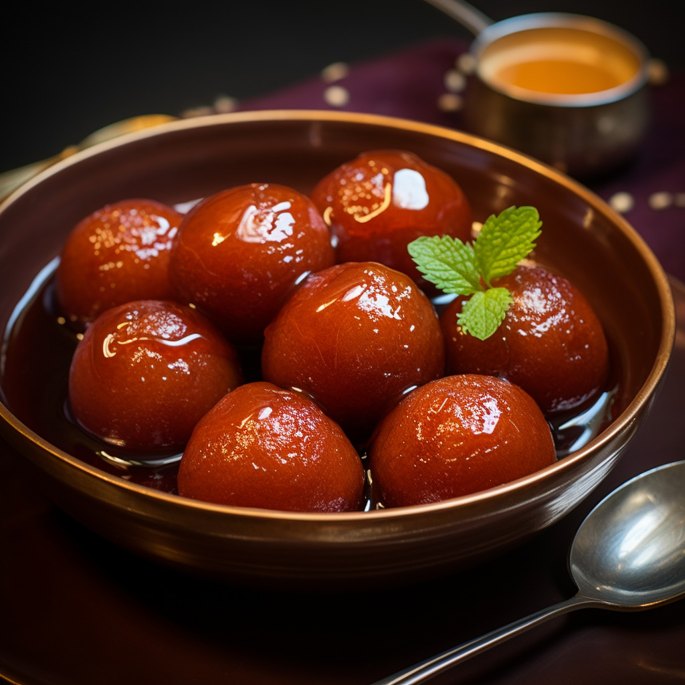
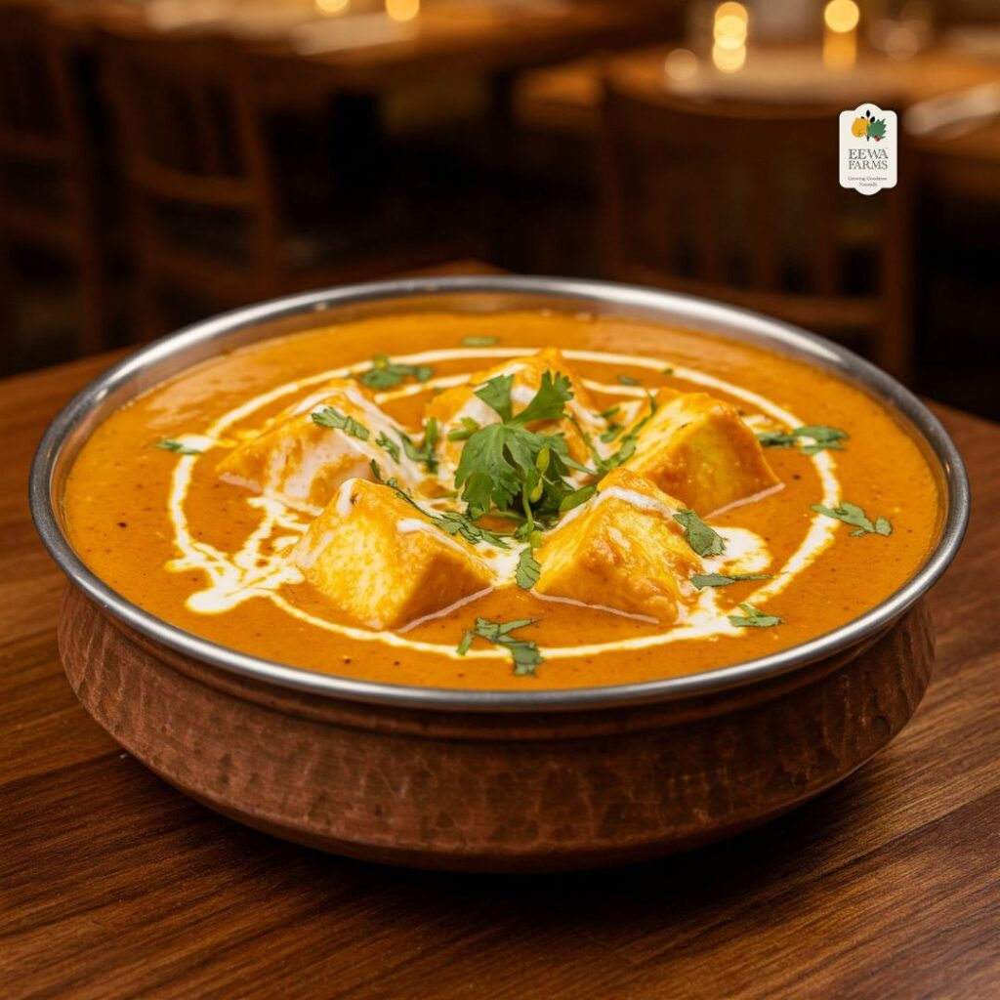

Gulab Jamun
Ingredients
- 1 cup khoya (mawa) grated
- ¼ cup maida (all-purpose flour)
- ¼ tsp baking soda
- 2–3 tbsp milk (as needed)
- 2–3 tbsp milk (as needed)
- 1½ cups sugar
- 1½ cups water
- 3–4 green cardamoms (elaichi), crushed
- 1 tsp rose water (optional)
- A few saffron strands (optional)
For Gulab Jamun:
For Sugar Syrup (Chashni):
Recipe
- Sabse pehle khoya, maida aur baking soda ko mix karein.
- Doodh daal kar soft dough bana lein aur balls taiyar karein.
- Golden brown hone tak fry karein.
- Garam chashni mein 2 ghante soak karke serve karein.

Paneer Butter Masala
Ingredients
- 250g paneer (cubed)
- 2 tomatoes (chopped)
- 1 onion (chopped)
- 2 tbsp butter
- 1 tbsp ginger-garlic paste
- 1 tsp red chili powder
- ½ tsp turmeric powder
- 1 tsp garam masala
- ½ cup fresh cream
- Salt to taste
For Curry:
For Spices:
Recipe
- Sabse pehle butter garam karke onion aur ginger-garlic paste ko bhun lein. Phir tomatoes daal kar soft hone tak pakaein.
- Mixture ko thanda karke blend kar lein aur wapas pan mein daal dein.
- Ab saare masale aur namak daal kar 5 minute tak pakaein. Iske baad paneer cubes daal dein.
- Fresh cream mila kar 2–3 minute pakaein. Garma-garam Paneer Butter Masala serve karein.

Veg Biryani
Ingredients
- 2 cups basmati rice
- 1 cup mixed vegetables
- 1 onion (sliced)
- 2 tbsp curd
- 2 tbsp oil
- 1 bay leaf
- 2 cloves
- 1 cinnamon stick
- 1 tsp biryani masala
- Salt to taste
For Biryani:
For Spices:
Recipe
- Rice ko dhokar aadha paka lein aur alag rakh dein.
- Pan mein oil garam karke onions aur sabhi spices ko bhun lein.
- Vegetables aur curd daal kar 5–7 minute tak pakaein.
- Ab rice ki layer laga kar dum par 15 minute pakaein. Veg Biryani taiyar hai.